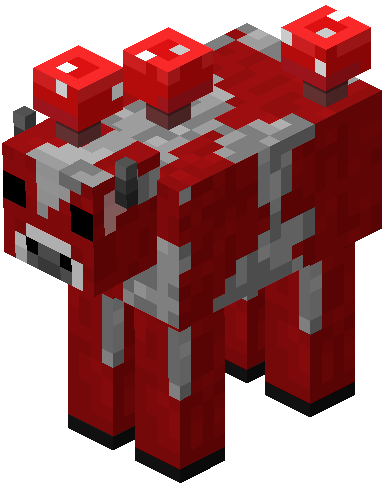

LAS VACAS HONGO
LO DIFERENTE DE LAS VACAS HONGO ESQUE LAS BACAS HONGO DAN COMIDA Y LAS
VACAS NORMALES NO Y SE ENCUENTRAN EN UN BIOMA MUY RARO.

el biomna de las vacas hongos se encuentran muy dificil tienes que
viajar por mucho tiempo
 mi mob favorito es el calamar brillante porque me ilumina
mi mineral favorito es la netherite
mi mob favorito es el calamar brillante porque me ilumina
mi mineral favorito es la netherite
mi forma favorita de morir es por el dragon
mi animal favorito es el caballo porque corre muy rapido